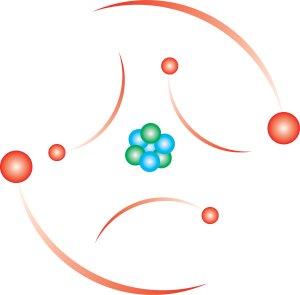

Impulse
A small, dynamically typed, message based prototypical language written with simplicity in mind.
Impulse is a small, dynamically typed, message based prototypical language written with simplicity in mind. Its syntax and semantics are derived mostly from Ruby, Io, Smalltalk and Dylan, and it's purpose is to be a smarter 'scripting' language, with features such as trait composition, extension methods (wich solves monkey-patching), and constructor field initialization. A core goal is to keep the language, both the implementation and the syntax, small and lightweight.
Examples
100 Doors [http://rosettacode.org/wiki/100_doors]
// Unoptimized version doors = [false] ** 100 (1..100) each: |i| do (i..100) each: |j| do doors[j] = doors[j] not end, step: i end
// Optimized version doors = [false] ** 100 (1..100 sqrt) each: |i| do doors[i * i] = true end
Transform a few names into a different format
names = ["mark twain", "john smith"] result = names map: |name| do name split: " " $ map: #capitalize $ reverse $ join: ", " end // The $ operator simply groups expressions. This is equivalent: result = names map: |name| do (((name split: " ") map: #capitalize) reverse) join: ", " end
Generate an 8-bit binary literal (not yet valid in Impulse)
"0b" ++ (0..1 $ sample: 8 $ join: "") // This creates a string such as: "0b01100110"
Different ways to compose messages
"abc" upper-case // A normal message-send "abc" with: #upper-case // Passing a symbol to use as the message "abc" with: |c| c upper-case // Passing a block, useful for ad-hoc chaining "abc" send: #upper-case, args: [] // Meta-message-send with symbol and arguments array
Define a simple bank-account object
object <bank-account> field balance = 0 method deposit: amount self.balance = self.balance + amount end end account = <bank-account> [#balance => 100]
Download
The latest implementation is written in Ruby, which facilitates rapid prototyping, provides garbage collection, etc., and can be found here: https://github.com/mikeaustin/impulse-language/tree/master/ruby2
You can run the interactive interpreter, or REPL, by typing:
ruby impulse.rb
To execute code in a file, simply add the filename afterwards. For example,
ruby impulse.rb tests.im
Reference
- The Impulse Programming Language
- Impulse: Why Another New Language?
- Impulse Runtime Documentation
- Impulse Example: Standard Library
- Impulse Runtime Class Reference
Related
- Predicate Dispatching: A Unified Theory of Dispatch
- Dylan Singleton Types [Dylan Reference Manual]
- Haskell/Pattern matching
- The Self Programming Language
- Prototypes with Multiple Dispatch [PDF]
Contact
You can reach me with any questions or comments at mike AT mike-austin DOT com